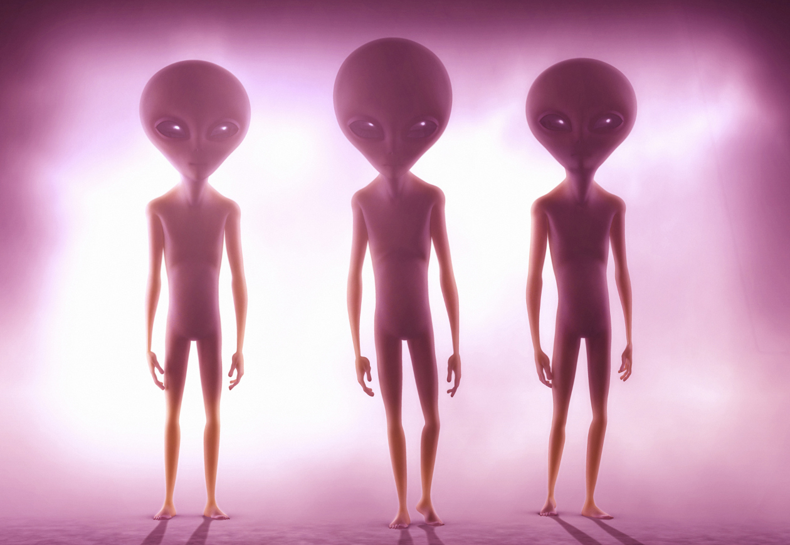

Hace algún tiempo se especuló con que el emisario de la Tierra en Marte, el Curiosity había descubierto señales de la existencia de vida en el Planeta Rojo. Al final de cuentas, ocurrió que las evidencias no fueron lo suficientemente sólidas para asegurar o desmentir la presencia de moléculas orgánicas en el suelo marciano. Y como se sabe, aquello que no se puede demostrar cabalmente a través de la ciencia no es un hecho, sino mera especulación.
Sin embargo, a pesar de que se reducen las posibilidades de la existencia de vida en Marte, la especulación a este respecto ha despertado un viejo debate: ¿Es posible que haya vida en otros planetas?
Hasta ahora, las voces expertas en el tema se habían permitido ser escépticas al respecto, pero ahora la posibilidad de encontrar vida en planetas fuera y dentro del sistema solar crece, a decir de la comunidad científica. Y no sólo eso, sino que se esgrimen razones para justificar este renovado optimismo por la posibilidad de encontrar vida extraterrestre.
Los extremófilos en la Tierra son aquellos organismos que pueden vivir en condiciones en los que la vida, habitualmente, no es viable: como el calor volcánico, la falta de oxígeno, las condiciones de extrema presión y hasta el vacío del espacio (los tardígrados son organismos microscópicos que pueden sobrevivir ahí). Es decir, hay formas de vida que pueden prevalecer en condiciones similares a las que se encuentran en otros planetas y lunas de nuestro sistema solar. Evidencia de precursores químicos de la vida en otros planetas y lunas. Las moléculas que después evolucionarían hasta formar complejas cadenas como el ADN, tuvieron su origen en compuestos orgánicos - proteínas, carbohidratos y lípidos – que en un principio estuvieron disueltos en la atmósfera y el océano. Pues bien: hay evidencia de la presencia de estos precursores en otros mundos. Titán tiene algunos en su atmósfera y el espectrógrafo revela la presencia de algunos otros en la Nebulosa de Orión. No son evidencias certeras de vida, pero sí de su posibilidad fuera de nuestro planeta.
La Agencia Espacial Estadounidense (NASA) ha anunciado este miércoles que astrónomos de Estados Unidos y Europa han encontrado siete exoplanetas con características muy similares a la Tierra. Los planetas orbitan la estrella nombrada TRAPPIST-1, una enana roja ultrafía, con solo un 8% de la masa del Sol, es decir que tiene un brillo cerca de mil veces menor al del Sol. A tan solo 40 años luz de la Tierra hay un sistema estelar con siete planetas de masa similar a la Tierra, tres de los cuales se encuentran en la zona habitable y podrían albergar océanos de agua en la superficie, lo que aumenta la posibilidad de que ese sistema pudiera acoger vida. El sistema, localizado por un grupo internacional de astrónomos y cuyo estudio publica este miércoles Nature, tiene tanto el mayor número de planetas del tamaño de la Tierra como el mayor número de mundos que podrían contar con agua líquida en superficie. Además, tres de ellos están situados a en la "zona habitable" respecto a su estrella, es decir, la distancia justa precisa que haría posible la existencia de océanos en su superficie. Los seis planetas más cercanos a la estrella, probablemente rocosos, pueden tener una temperatura en la superficie de entre 0 y 100 grados, el rango en el que puede haber agua líquida, y tres de ellos están en la llamada "zona habitable", por lo que son candidatos especialmente prometedores para albergar vida.
El autor principal del estudio, Michaël Gillon, del Instituto STAR en la Universidad de Lieja (Bélgica) se mostró encantado con los resultados: "Se trata de un sistema planetario sorprendente, no sólo porque hayamos encontrado tantos planetas, ¡sino porque son todos asombrosamente similares en tamaño a la Tierra!", según un comunicado. El nuevo sistema es relevante para los científicos por su cercanía a la Tierra en términos astronómicos y porque es el primero que cuenta con siete planetas de un tamaño similar al nuestro, así como por el reducido tamaño de su estrella, una particularidad que simplificará el estudio del clima y la atmósfera de esos mundos. Los siete planetas son 80 veces mayores respecto a TRAPPIST-1 que la Tierra respecto al Sol, por lo que bloquean una gran cantidad de luz cuanto transitan por delante de la estrella. Eso facilita a los investigadores la tarea de identificar sus componentes químicos por medio de técnicas de fotometría.